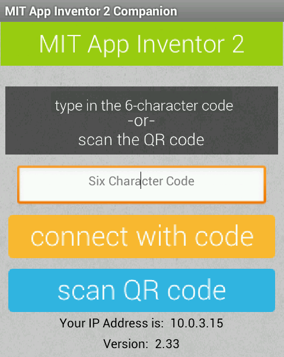
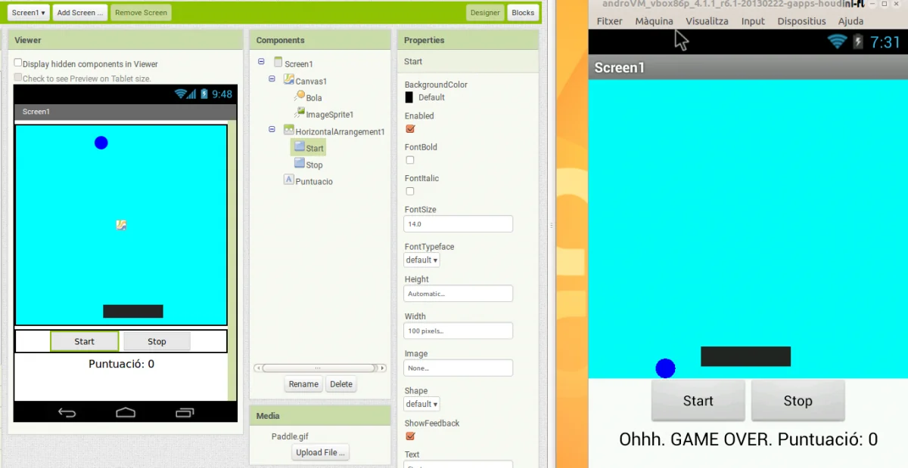

App Inventor virtualitzar MIT Companion

Provar les aplicacions per a móbils creades amb App Inventor amb l’emulador, és una tasca complicada i ferregosa, que sempre porta problemes. Una solució és virtualitzar un android, per exemple amb virtualbox, i instalar el programa MIT companion i fer les proves. Aquí topem amb el problema que MIT Companion, tant sos admet connexions per wifi. Per tant necessàriament hem de trobar una distribució android que emuli una conexió wifi.
Ja vam veure que la comparativa de rapidesa no tenia color, ho podeu recordar a: App Inventor i l’emulador
Despres de cercar, he trobat la solució, tal com ja es podia veure al vídeo anterior, aquest any cercava una distribució android més actual, però despres de diverses proves no he conseguit que funcionin correctament, així que seguirem amb la 4.1.
Anem a detallar com es fa la instal·lació. Primer definirem que ens cal:
- Virtual Box. el podem trobar a: Pàgina oficial
- Android amb wifi: jo l’he descarregat de:
http://www.linux.org/threads/android-in-virtualbox.6998/En concret la versió: Android 4.1 mobilPodeu descarregar la versió 4.2.2 Que servirà igual.- O
bé d’aquest altra lloc.
- El programa MIT Companion: Pàgina oficial
- Per els que feu servir windows potser us caldra el HFS.
Un cop ho hem descarregat tot pasem a fer la instal·lació i posada en funcionament:
- Instal·lem Virtual Box.
- Instalem l’android que hem descarregat. Tant sols fem doble clic al fitxer descarregat . OVA, i es posa en funcionament.
- Ara hem de instal·lar el MIT companion a l’android, si no volem posar un correu a l’android virtualitzat, ho podem fer de la següent manera:
- Ens posem a la carpeta on hem descarregat el MIT Companion i obrim un terminal
- Executem:
- $ifconfig
- Per saber la IP del nostre ordinador i ens l’anotem.
- $python -m SimpleHTTPServer
- Creem una carpeta accessible per http. IP:8000
- $ifconfig
- Obrim el navegador a l’android
- Escribim a l’adreça la IP trobada seguida del port.
- 192.168.0.155:8000
- Descarreguem el programa
- Anem a l’aplicació Baixades de l’android i trobem l’aplicació per instal·lar. Si no hem activat instal·lar de llocs desconeguts ho fem ara. I fem la instal·lació.
- Per últim tanquem la màquina virtual i canviem la configuració de la tarja de xarxa al VirtualBox de NAT a adaptador pont. En alguna ocasió no ha calgut, però per seguretat ho fem i ja podem començar a provar les nostres pràctiques.
